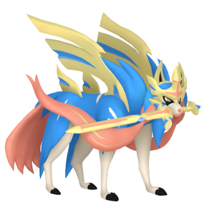

#888
Zacian
Steel
Known as a legendary hero, this Pokémon absorbs metal particles, transforming them into a weapon it uses to battle.
Height: 2.8m
Weight: 110kg
Steel
Known as a legendary hero, this Pokémon absorbs metal particles, transforming them into a weapon it uses to battle.
Height: 2.8m
Weight: 110kg
Dog
Pressure
Intrepid Sword
Tower Summit
In its Hero of Many Battles form, Zacian is a large cyan lupine Pokémon with yellow eyes, a pink tail, and pink braids going down the side of its body. Two pink fringes of fur are present on its back. Battle scars are visible on its sides, and part of its left ear is missing. In its Crowned Sword form, the fringes of fur on its back become wing-like armor and its braids grow to resemble ribbons. Additionally, its head is covered by a golden helmet, and it carries a golden sword decorated to resemble Zacian's colors. According to legends, Zacian is believed to be either the elder sister or rival of Zamazenta.
It is also known as the Fairy King's Sword by friends and foes due to it being able to cut down anything in one strike. It can turn itself into a statue in order to slumber until needed and is capable of flying. Zacian can attack so gracefully the movements can captivate its opponents, which has been compared to a graceful dance. The sword it holds in its mouth can cut through anything with a sharp edge capable of harming even the thick scales of Dragon-type Pokémon as if they were just paper.